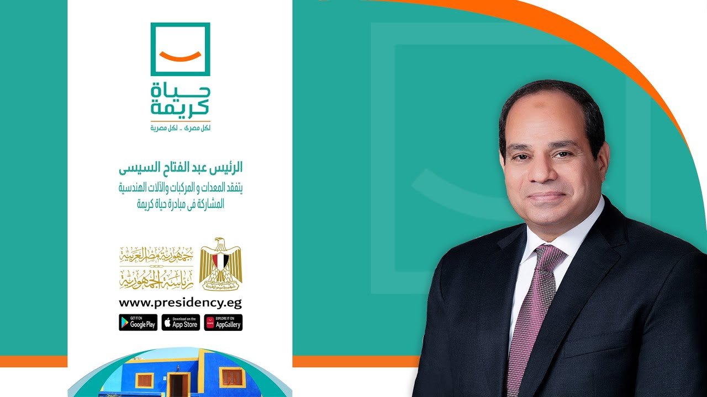
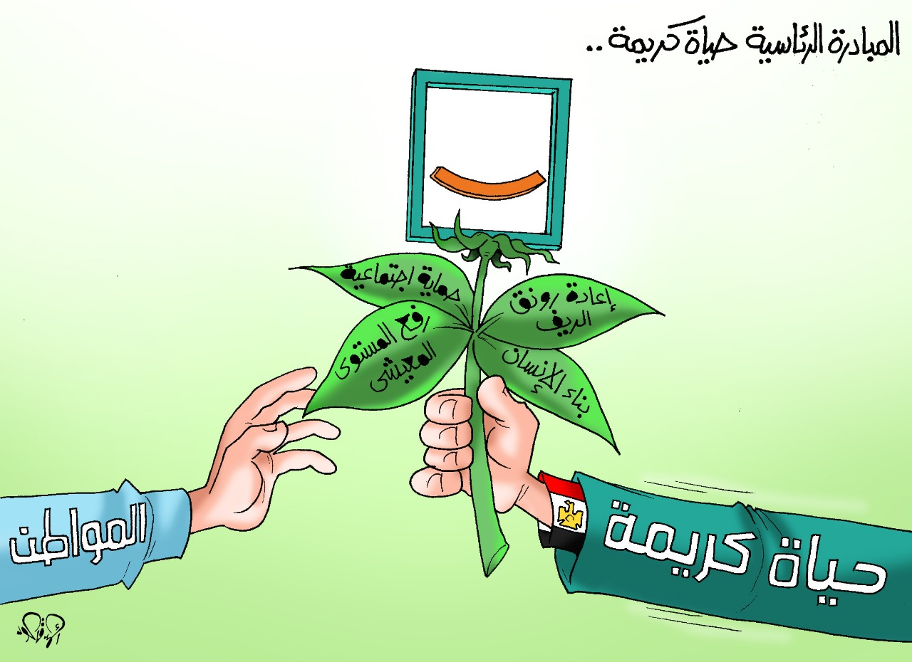

مفهوم المبادره
هى مبادرة وطنية أطلقها السيد الرئيس عبد الفتاح السيسي رئيس جمهورية مصر العربية في 2 ينايرعام 2019 لتحسين مستوى الحياه للفئات المجتمعية الأكثر احتياجاً على مستوى الدولة كما تسهم فى الأرتقاء بمستوى الخدمات اليومية المقدمة للمواطنين وبخاصة فى القرى الأكثر إحتياجاً وتوفير حياة كريمة لهم لسد الفجوات التنموية بين المراكز والقري وتوابعهم والاستثمار في تنمية الانسان وتعزيز قيمة الشخصية المصرية.
الفئات المستهدفه
1- الأسر الأكثر احتياجاً فى التجمعات الريفية
2- كبار السن
3- ذوي الهمم
4- النساء المعيلات والمطلقات
5- الايتام والاطفال
6- الشباب القادر على العمل
المستفيد من المبادرة
20 محافظة
175 مركز
4584 قرية
28000 تابع
58000000 مواطن
تتضمن المبادرة:
1- سكن كريم: رفع كفاءة المنازل ، بناء أسقف ، بناء مجمعات سكنية ومد وصلات مياه وصرف صحى وغاز وكهرباء داخل المنازل.
2- بنية تحتية : مشروعات متناهية فى الصغر وتفعيل دور التعاونيات الإنتاجية فى القرى
3- خدمات طبية : بناء مستشفيات ووحدات صحية وتجهيزها من معدات وتزويدها بالكوادر الطبية المتميزه بالإضافة الى إطلاق قوافل طبية لتقديم الخدمات الصحية فى كل مكان.
4- خدمات تعليمية: بناء ورفع كفاءة المدارس والحضانات وإنشاء فصول محو الأمية وتوفير الكوادر التعليمية
5- تمكين اقتصادى : تدريب وتشغيل المواطنين من خلال مشروعات متوسطة وصغيرة ومتناهية الصغر .
6- تدخلات اجتماعية وتنمية انسانية : تستهدف الاسرة والطفل والمرأة وتشمل بناء وتأهيل الإنسان وزواج اليتيمات من تجهيز منازل الزوجية الى عمل افراح اجتماعية
7- تدخلات بيئية :تجميع مخلفات القمامة وبحث سبل تدويرها....
المباديء الاساسية :
1- الشفافية فى تداول المعلومات
2- تعزيز الحماية الاجتماعية للفئات الاكثر احتياجاً
3- الالتزام والتعهد لكل شريك للقيام بدوره وفق منهجية العمل ومعايير الخدمات
4- دعم اللامركزية عن طريق تفويض السلطة واتاحة قدر اكثر من المرونة وتقريب المسافة بين
5- النزاهه فى اداء الخدمة المستحقه
6- الثقه المتبادلة بين كافة الجهات الشريكة والشباب المتطوع للعمل
7- التوازن بين تقديم التدخلات الخدمية والتدخلات التنموية والانتاجية